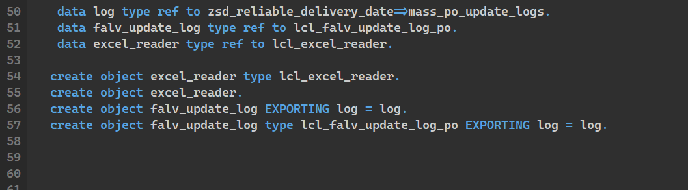

ABAP Quick Fixes - Replace CREATE OBJECT with NEW
You can use this quick fix if you find CREATE OBJECT statement in your code. It will replace it with NEW operator.
Works with TYPE and EXPORTING additions.
